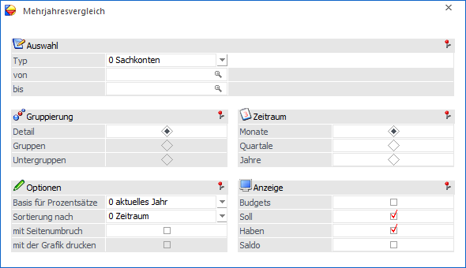
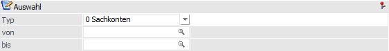
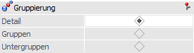
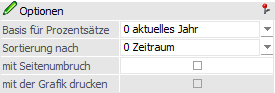
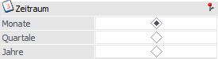
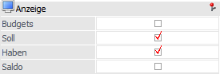
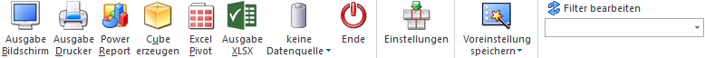

Für zahlreiche Stammdatenbereiche bietet die WinLine die Möglichkeit, einen Mehrjahresvergleich durchzuführen. Dadurch können u.a. die Umsätze der Vorjahre mit dem aktuellen Jahr verglichen werden. Der Aufruf des Mehrjahresvergleichs erfolgt hierbei über den Menüpunkt…
1 WinLine INFO
1 Info
1 Mehrjahresvergleich
… und beinhaltet immer 5 Jahre:
aktuelles Wirtschaftsjahr
Vorjahr 1 bis 4
Hinweis
Im Programm "Mehrjahresvergleich - Optionen" können diverse Voreinstellungen für den Mehrjahresvergleich getroffen werden (siehe auch Button "Einstellungen").

Die Ausgabe des Mehrjahresvergleichs kann nach den folgenden Kriterien eingeschränkt bzw. definiert werden:
Auswahl

Ø Typ
An dieser Stelle kann der Stammdatenbereich definiert werden, für welchen der Mehrjahresvergleich erfolgen soll. Folgende Bereiche stehen hierbei zur Auswahl:
ü 0 - Sachkonten
ü 1 - Debitoren
ü 2 - Kreditoren
ü 3 - Artikel
ü 4 - BKZ
ü 5 - BKZ 2
ü 6 - BKZ 3
ü 7 - BWA 1
ü 8 - BWA 2
ü 9 - BWA 3
Typ von / bis
Abhängig vom gewählten Typ kann an dir Stelle eine Selektion für die Ausgabe des Mehrjahresvergleichs erfolgen.
Hinweis
Über den Bereich "Gruppierung", welcher für ausgewählte Stammdatenbereiche zur Verfügung steht, kann die hier zu hinterlegende Selektion beeinflusst werden.
Gruppierung

Ø Detail / Gruppen / Untergruppen
Die Ausgabe kann wahlweise im Detail, in Gruppen oder in Untergruppen erfolgen (falls für diesen Bereich Gruppen vorgesehen sind), wobei sich die Einstellung direkt auf die Selektion "Typ von / bis" auswirkt.
Hinweis
Bei einer BI-Ausgabe stehen neben der hier gewählten Gruppierung viele weitere Informationen zur Verfügung. So werden bei einem Mehrjahresvergleich auf Basis "Artikel -> Detail" auch die Daten "Artikelgruppe" und "Artikeluntergruppe" zur Verfügung gestellt. Bei einem Vergleich auf Basis "Artikel -> Gruppen" auch die jeweiligen Artikel.
Achtung
Beim Mehrjahresvergleich für Artikelgruppen werden "Hauptartikel mit Ausprägungen" nicht berücksichtigt; d.h. berücksichtigt werden nur die "Ausprägungen" selbst.
Optionen

In dem Bereich "Optionen" können diverse Einstellungen für die Ausgabe auf Bildschirm bzw. Drucker getroffen werden.
Ø Basis für Prozentsätze
Hier kann eingestellt werden, auf welcher Basis die Prozentsätze für die Abweichungen berechnet werden sollen, wobei hier folgende Möglichkeiten zur Verfügung stehen.
0 - aktuelles Jahr
Wird als Basis für Prozentsätze "0 -
aktuelles Jahr" gewählt, so beziehen sich die angeführten Prozentsätze immer auf
das aktuelle Wirtschaftsjahr
Beispiel
Jahr: 2024 Wert: 100
Jahr: 2023 Wert: 150
Jahr: 2022 Wert: 130
Im Jahr 2023 werden -33% angezeigt (der Umsatz ist im Jahr 2024 um 33% niedriger als im Jahr 2023)
Im Jahr 2022 werden -23% angezeigt (der Umsatz ist im Jahr 2024 um 23% niedriger als im Jahr 2022)
1 - Folgejahr
Wird als Basis für Prozentsätze "1 -
Folgejahr" gewählt, so beziehen sich die angeführten Prozentsätze immer auf das
Folgejahr.
Beispiel
Jahr: 2024 Wert: 100
Jahr: 2023 Wert: 150
Jahr: 2022 Wert: 130
Im Jahr 2023 werden -33% angezeigt (der Umsatz ist im Jahr 2024 um 33% niedriger als im Jahr 2023)
Im Jahr 2022 werden 15% angezeigt (der Umsatz ist im Jahr 2023 um 15% höher als im Jahr 2022)
Ø Sortierung nach
Hier kann eingestellt werden, in welcher Reihenfolge die Daten ausgegeben werden sollen.
0 - Zeitraum
Es wird nach dem Zeitraum sortiert, d.h.
innerhalb des Zeitraums (z.B. Monat) werden die selektierten Werte
angedruckt.
Beispiel
Es werden die Werte "Soll" und
"Haben" sortiert nach "Zeitraum" ausgegeben, der Zeitraum selbst ist der
Monat.
Es wird zuerst der Januar angedruckt, wo dann die Werte "Soll" und
"Haben" aufscheinen, dann wird der Februar mit "Soll" und "Haben" gedruckt
usw.
1 - Wert
Es wird nach den Werten sortiert, die angedruckt
werden sollen, d.h. ausgehend vom Wert (z.B. Soll) werden dann die
entsprechenden Zeiträume ausgewertet.
Beispiel
Es werden die Werte "Soll" und
"Haben" sortiert nach "Wert" ausgegeben, der Zeitraum selbst ist der
Monat.
Es wird zuerst "Soll" angedruckt, dann alle Sollwerte von Januar bis
Dezember, erst dann wird der Habenwert, wieder von Januar bis Dezember
ausgewertet.
mit Seitenumbruch
Durch Aktivierung dieser Option wird nach jedem Stammdatenobjekt ein Seitenumbruch durchgeführt.
mit der Grafik drucken
Wird mit einem Seitenumbruch gearbeitet, so kann zusätzlich eine Grafik pro Objekt ausgegeben werden.
Zeitraum

Ø Monate / Quartale / Jahre
Hier kann für die Bildschirm- bzw. Druckausgabe definiert werden, ob ein Vergleich nach Monats-, Quartals- oder Jahreswerten erfolgen soll. Die BI-Ausgaben stellt immer alle Varianten zur Verfügung.
Anzeige

Ø Anzeige
An dieser Stelle kann hinterlegt werden, welche Werte beim Mehrjahresvergleich berücksichtigt werden sollen. Bei der Auswertung für Artikel können "Umsatz", "Rohertrag" und "Budget" verglichen werden. Bei den übrigen Bereichen (Sachkonten, BKZ, usw.) stehen die Werte "Soll", "Haben", "Saldo" und "Budget" zur Verfügung.
Buttons

Ausgabe Bildschirm
Mit Hilfe des Buttons "Ausgabe Bildschirm" oder der Taste F5 wird die Auswertung am Bildschirm ausgegeben.
Ausgabe Drucker
Durch Anwahl des Buttons "Ausgabe Drucker" wird die Auswertung am Drucker ausgegeben.
Power Report
Durch Drücken des Buttons "Power Report" wird die Auswertung auf Basis von Cube-Daten grafisch dargestellt. Die Ausgabe ist individuell anpassbar und erfolgt in der Form von "Widgets", die unterschiedlichste Darstellungen ermöglichen.
Cube erzeugen
Wenn die Option "Ausgabe auf Cube" gewählt wird (nur möglich wenn auch die entsprechende Lizenz dafür vorhanden ist), dann wird der Mehrjahresvergleich im "Olap Viewer" angezeigt, wo es dann die Möglichkeit gibt, die Daten nach verschiedenen Gesichtspunkten auszuwerten.
Excel Pivot
Durch Anwahl des Buttons "Excel Pivot" werden die Vergleichszeilen in Form einer Pivot Ausgabe in Microsoft Excel (2007 oder höher) angezeigt.
Ausgabe XLSX
Mit Hilfe des Buttons "Ausgabe XLSX" werden die ausgewerteten Zeilen an Microsoft Excel übergeben.
Datenquelle
Mit Hilfe dieser Auswahl kann definiert werden, ob und wie eine Datenquelle (d.h. ein Snapshot oder eine MasterView) verwendet werden soll.
Keine Datenquelle
Bei Auswahl von "keine Datenquelle" wird
keine zuvor angelegte Datenquelle genutzt. D.h. die Daten werden von der WinLine
"live" ermittelt und in der gewünschten Form ausgegeben.
Hinweis
Da die BI-Ausgabe (z.B. Cube oder Power Report) immer eine Datenquelle benötigt, wird im Hintergrund eine temporäre Datenquelle (Snapshot) gebildet.
Datenquelle erstellen/aktualisieren
Die Daten werden zur
Laufzeit ermittelt und an einen zu definierenden Snapshot übergeben. Nach dem
Füllen der Datenquelle wird die gewünschte Ausgabevariante über die Datenquelle
erzeugt. Dieser Vorgang kann mit einer Zeitverzögerung verbunden sein, da die
Daten zusätzlich gespeichert werden müssen.
Hinweis
Die Ausgabevarianten "Ausgabe Bildschirm" und "Ausgabe Drucker" stehen beim Erstellen bzw. Aktualisieren einer Datenquelle nicht zur Verfügung.
Datenquelle verwenden
Bei der Verwendung eines Snapshots
werden die Daten direkt aus der Datenquelle gelesen, d.h. die für die Ausgabe
benötigten Daten können ohne Verzögerung in der gewünschten Variante ausgegeben
werden.
Wird hingegen eine MasterView gewählt, so werden die Daten für die
Ausgabe "live" ermittelt, wobei diese so aktuell sind wie die zugrunde liegenden
Datenquellen.
Hinweis
Der Button "Datenquelle verwenden" wird nur angeboten, wenn für diesen Bereich (bezogen auf den aktuellen Benutzer / Mandanten) zumindest eine private oder öffentliche Datenquelle existiert. Des Weiteren stehen die Ausgabevarianten "Ausgabe Bildschirm" und "Ausgabe Drucker" nicht zur Verfügung.
Hinweis
Weitere Informationen zum Thema "Datenquellen" entnehmen Sie bitte dem Die Datenquelle.
Ende
Durch Drücken des Buttons "Ende" bzw. der Taste ESC wird das Fenster geschlossen.
Einstellungen
Mit Hilfe dieses Buttons wird das Fenster "Mehrjahresvergleich - Optionen" geöffnet, in welchem Voreinstellungen für den Mehrjahresvergleich vorgenommen werden können.
Hinweis
Getätigte Änderung werden ab dem nächsten Start des Mehrjahresvergleichs angewendet.
Voreinstellung speichern
Durch Anwahl dieses Buttons erfolgt eine benutzerspezifische Speicherung aller im Fenster getätigten Einstellungen. Diese sogenannten "Voreinstellungen" können jederzeit wieder abgerufen werden und ermöglichen dadurch ein schnelleres und zielorientierteres Arbeiten (nähere Informationen entnehmen Sie bitte dem Kapitel "Die Voreinstellungen").
Filter bearbeiten
Durch Anklicken des Buttons "Filter bearbeiten" kann der Mehrjahresvergleich nach frei definierbaren Kriterien eingeschränkt werden.